Actualités 2020/2021
Suivez les actualités et événements de Notre Dame La Riche et des différents établissements
De la maternelle à l'enseignement supérieur !
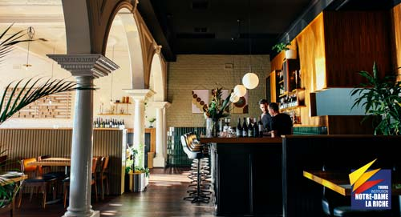
L'hôtellerie et la restauration, des secteurs qui recrutent !
30/08/2021
Ces deux métiers figurent dans le top 10 en volume des projets de recrutement. Selon l’enquête Pôle emploi sur les besoins en main-d’œuvre (BMO). Une situation qui existait déjà avant la crise du covid-19 ...
Inscriptions Ecole maternelle ou élémentaire
26/08/2021
Déménagement, changement de situation... Quelques place encore disponibles pour la rentrée 2021. Contactez-nous rapidement, le nombre de places est limité...
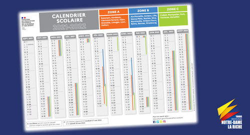
Le calendrier scolaire de cette nouvelle rentrée.
25/08/2021
En téléchargement, à consulter et à imprimer en A4 ou A3. En espérant que la COVID-19 ne bouleverse pas le calendrier prévu ! Les prochaines vacances auront lieu le samedi 23 octobre après les cours...
Pour bien préparer la rentrée des petits et des plus grands
19/08/2021
Quelques conseils pour retrouver un rythme adapté et éviter le stress pour la fin des vacances...
Fin des vacances pour Notre-Dame La Riche
17/08/2021
L'administration de Notre-Dame La Riche rouvre ses portes à compter de ce mardi 17 août pour vous permettre de bien préparer cette rentrée 2021...
NOTREDAMELARICHE.FR, ne prend pas de vacances !
07/08/2021
Vous recherchez un établissement ou une formation pour la Rentrée 2021
Votre enfant ou vous êtes inscrits dans un des 7 établissements Notre-Dame La Riche, les documents de rentrée sont à retourner avant le 16 août...
Le protocole sanitaire pour la rentrée 2021 à ce jour
03/08/2021
Le ministère de l'Éducation nationale, de la Jeunesse et des Sports a dévoilé le protocole prévu à ce jour...
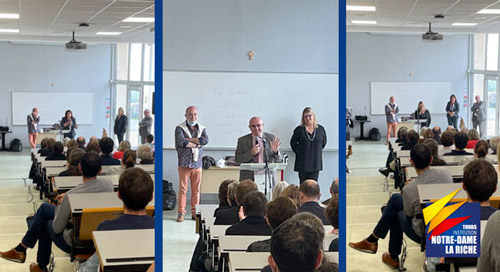
Présentation des nouveaux chefs d'établissements
21/07/2021
Le 30 juin, en fin d'après-midi avait lieu devant les professeurs et enseignants des différents établissements...
Les vacances d'été 2021 !
16/07/2021
L'équipe pédagogique prend des vacances, les établissements de Notre-Dame La Riche seront alors fermés jusqu'au lundi 16 août inclus !
Félicitations !
06/07/2021
Aujourd'hui est un grand jour pour tous les bacheliers de France ! Les résultats seront consultables à partir de 8h30
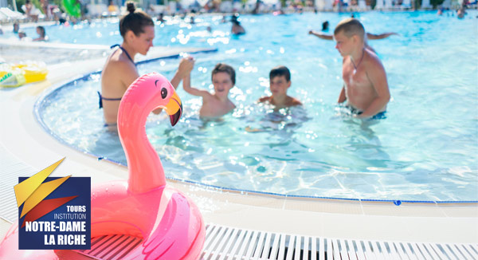
Les vacances d'été !
05/07/2021
Pendant les vacances d'été, nous restons ouverts jusqu'au 16 juillet inclus ! 🍦☀️😎
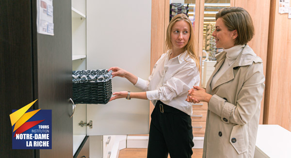
CAP Équipier polyvalent du commerce en journée portes ouvertes
01/07/2021
Vendredi 2 juillet de 16h à 19h | Samedi 3 juillet de 9h30 à 13h | Mercredi 7 juillet de 16h à 19h
3e Prépa Métiers, journée portes ouvertes
30/06/2021
Vendredi 2 juillet de 16h à 19h | Samedi 3 juillet de 9h30 à 13h | Mercredi 7 juillet de 16h à 19h
Journées portes ouvertes spéciales lycée pro
29/06/2021
Vendredi 2 juillet de 16h à 19h | Samedi 3 juillet de 9h30 à 13h | Mercredi 7 juillet de 16h à 19h
École élémentaire, quelques places de disponibles pour la rentrée 2021 !
27/06/2021
📣 Des places dans différentes classes de l'élémentaire se sont libérées suite à des désistements et mutation...
Des places se libèrent en maternelle pour la rentrée 2021 !
23/06/2021
📣 Suite à des désistements et des mutations, des places se libèrent dans...
BTS Management Commercial Opérationnel à Notre-Dame la Riche
14/06/2021
Le titulaire du BTS MCO est formé pour prendre la responsabilité d'une unité commerciale...
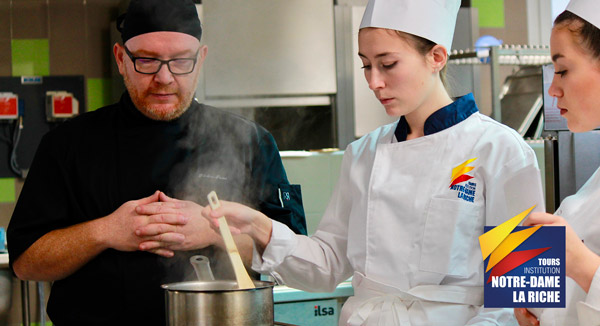
L'École Hôtelière de Notre-Dame la Riche
10/06/2021
Hier, mercredi 9 juin, tous les restaurateurs ont pu rouvrir leur établissement 👨🍳...
Le N°2 du NDLR.infos est publié
08/06/2021
Les élèves de 5e en option journalisme sortent leur deuxième numéro de NDLR.infos ! Plusieurs sujets sont abordés : le sport...
BTS Audiovisuel, inscription hors parcoursup
01/06/2021
Les réponses aux voeux sur parcoursup sont disponibles entièrement ou en partie selon les candidats. Il se peut que les réponses...
Les premiers résultats de parcoursup seront consultables à partir de ce soir 19h (jeudi 27 mai)
27/05/2021
Aujourd'hui les lycéens vont commencer à recevoir les premières réponses des vœux faits au mois de mars sur la plateforme Parcoursup...
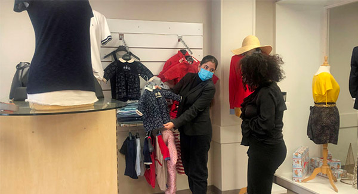
Versement de la taxe d'apprentissage : aménagement et équipement du laboratoire de vente
17/05/2021
Au sein du lycée professionnel, les élèves en Bac Professionnel Métiers du Commerce et de la Vente ont la possibilité de...
Préparation au Diplôme National du Brevet Blanc
12/05/2021
En 3e, les épreuves du DNB (Diplôme National du Brevet) blanc nouvelle formule ont commencé mardi 11 avec le...
Les lycées technologique et professionel Notre Dame La Riche sont habilités à recevoir votre taxe d'apprentissage
10/05/2021
En choisissant dès aujourd'hui Notre-Dame La Riche, vous donnez du sens à votre versement en contribuant au financement d'un des 4 projets...
Versement de la taxe d'apprentissage : Contribuer à la création d’un studio d’enregistrement
05/05/2021
Support d’apprentissage innovant et ludique, la (web)radio permettra à nos élèves de travailler de nombreuses...
Les élèves de 3e planche sur le Rallye Mathématique du Centre
03/05/2021
Comme tous les ans les 3e ont pu se pencher sur le rallye Mathématique du Centre. Cette année dans des conditions particulières qui ont été...
Versement de la taxe d'apprentissage : réduire la discrimination numérique
30/04/2021
Face au constat que seulement 50% des lycéens scolarisés au lycée Professionnel sont dotés d’un ordinateur chez eux, l’Institution...

Partenariat avec l'association A.S.D
27/04/2021
Afin de sensibiliser les jeunes à la solidarité internationale, Notre-Dame la Riche a signé le 31 mars un partenariat avec l'association....
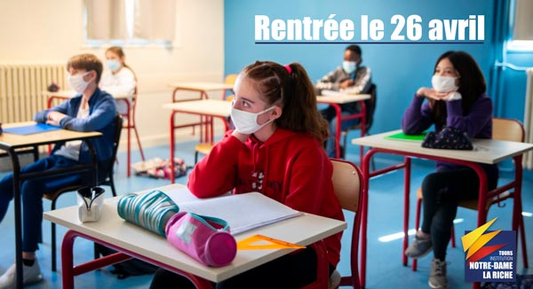
Rentrée des classes le 26 avril pour les maternelles et élémentaires
23/04/2021
Suite aux annonces du Premier ministre Jean Castex, la rentrée scolaire est confirmée le 26 avril avec un protocole strict et des ....
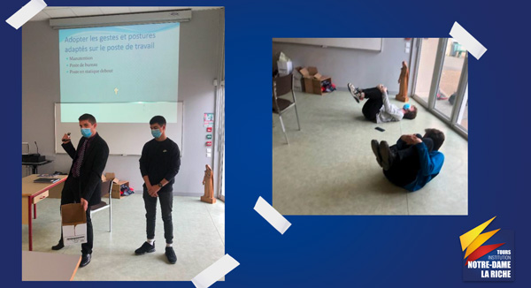
Formation gestes et postures pour les bac pro
20/04/2021
Chaque classe de terminale bac professionnel a bénéficié d’une formation «gestes et postures»...
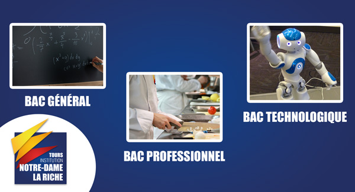
Vous êtes en seconde, quel BAC vous convient ?
14/04/2021
Vous êtes en seconde, et vous prévoyez votre orientation, pas de soucis ! Notre-Dame la riche vous propose un large choix de BAC disponible...
Rentrée 2021, 4 BTS en formation initiale hors Parcoursup
13/04/2021
Le BTS que vous souhaitez faire n’est pas sur Parcoursup ? Pas de panique ! L’admission à de nombreuses formations après...
Les vacances de printemps !
12/04/2021
Pendant cette période, Notre-Dame la riche reste ouverte, et joignable par...
Parcoursup J-1 pour confirmer vos vœux aux BTS de Notre-Dame la Riche
07/04/2021
Dernière ligne droite pour compléter votre dossier et confirmer vos vœux sur Parcoursup...
BTS Audiovisuel en formation initiale : une nouvelle option
24 mars 2021 Une nouvelle option s'ouvre au BTS Métiers de l'Audiovisuel de Notre-Dame la Riche :
Option montage et post-production.
Les étudiants qui choisissent cette option peuvent prétendre à des métiers comme Monteur, Assistant monteur, monteur truquiste, habilleur d'émissions TV, vidéographie, monteur port-production et bien d'autres !
Les titulaires d'un BTS Audiovisuel option Montage et post-production sont recherchés pour leurs compétences techniques et artistiques, leur polyvalence et leur capacité à travailler en équipe.
Si tu t'intéresses aux métiers de l’audiovisuel dans leur globalité, que tu disposes de compétences pour le travail en équipe et la mise en oeuvre de projets et que tu as des capacités d’organisation et d’autonomie, alors n'hésite plus !
Les inscriptions à ce BTS se font hors Parcoursup sur notre site Internet 👍.
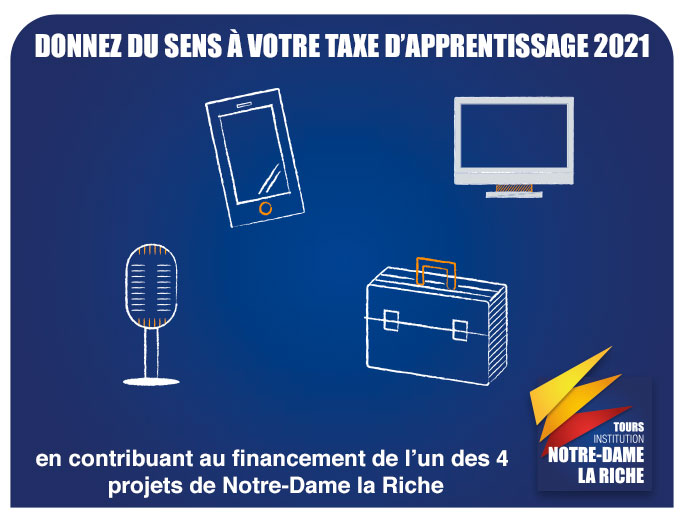
Donnez du sens à votre taxe d'apprentissage
22 mars 2021 Le versement de " la part libre " de la taxe d'apprentissage doit être fait par toutes les entreprises. Faites votre déclaration dès aujourd'hui et différez votre paiement après le 15 avril.
À Notre-Dame la Riche, vous choisissez le projet que vous financez :
➞ Tablettes à visée pédagogique
➞ Salles informatiques
➞ Studio d'enregistrement
➞ Équipement laboratoire vente
Retrouvez plus de détail sur notre pageTaxe d'apprentissage

Inscrivez-vous à notre journée d'informations sur RDV
26 février 2021 Venez nous rencontrer le samedi 20 mars de 9h30 à 13h00
❗️ Compte tenu de la situation sanitaire actuelle, pour assurer la sécurité de tous et faciliter l'organisation, la prise de rendez-vous à ces journées est obligatoire. Les familles seront accueillies de manière individuelle tous les quarts d'heure.
Merci de remplir notre formulaire pour être rappelé ou de nous contacter au 📞 02 47 36 32 00 pour prendre rendez-vous.
Parents, étudiants ou en réorientation, venez nous rencontrer dans nos différents établissements de la maternelle à l'enseignement supérieur !
Plus d'informations sur notre page dédiée à cette journée.
Notre-Dame La Riche reste à votre service pendant les vacances !
19 février 2021 Durant les vacances d'hiver, nous restons joignables pour répondre à vos demandes.
⚠️ Nos horaires changent légèrement. Nous sommes ouverts du lundi au vendredi de 9h à 12h et de 14h à 17h.
Profitez de ces vacances pour préparer la rentrée 2021, les préinscriptions sont déjà ouvertes.
Bonnes vacances à tous !
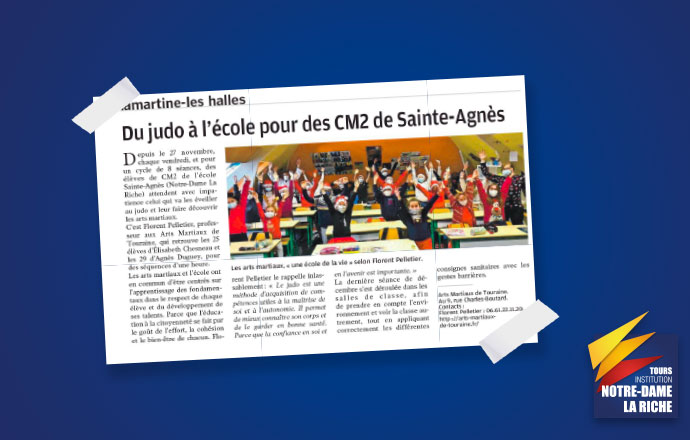
Du judo pour les élèves de CM2 de Notre-Dame La Riche
15 février 2021 Dans La Nouvelle République du mercredi 6 janvier, les élèves de CM2 posent pour la photo ! Des enfants heureux et impatients de retrouver Florent Pelletier qui les initie aux Arts Martiaux. 1 h tous les vendredis durant 8 semaines, les CM2 vont pouvoir apprendre les fondamentaux dans le respect des leurs camarades.
Comme le dit Florent Pelletier des Arts Martiaux de Touraine à la Nouvelle République : « Le judo est une méthode d'acquisition de compétences utiles à la maîtrise de soi et à l'autonomie. Il permet de mieux connaître son corps et de le garder en bonne santé. Parce que la confiance en soi et en l'avenir est importante. »
Qui sait, peut-être que cette initiation aura créé une vocation pour certain 🤗
C’est bientôt la St Valentin !
10 février 2021 Cette année vous souhaitez impressionner votre moitié ? Nous avons LE cadeau qu’il vous faut ! Offrez une dégustation de vins et spiritueux en amoureux de la Wine & Spirit School, l'école des vins de Notre-Dame La Riche.
Choisissez la dégustation de votre choix parmi les différents ateliers et cours et faites sensation.
Les chèques cadeaux sont valables jusqu’au 30 décembre 2021, vous pourrez les utiliser à n’importe quel moment de l’année 👍
Retrouvez les différentes offres sur wineandspiritschool.fr
S'inscrire à un BTS hors Parcoursup, comment faire ?
05 février 2021 Vous êtes intéressés par l'un de nos BTS Communication, Management commercial Opérationnel (MCO),Négociation et Digitalisation de la Relation Client (NDRC) ou Audiovisuel ? Il vous suffit d'aller sur notre page préinscription pour les BTS et de remplir le formulaire. Nous vous contacterons par la suite 👍
Vous souhaitez intégrer notre BTS Management en Hôtellerie Restauration (MHR) ou Tourisme, rendez-vous sur Parcoursup.fr en tapant " lycée Saint Medard 37 " dans la barre de recherche des formations et cliquez sur le BTS qui vous intéresse.
Une question ? N'hésitez pas à nous contacter.
S'inscrire à un BTS pour la rentrée 2021, comment faire ?
02 février 2021Février, pour les lycéens en classe de terminale, c'est LA période où il faut faire ses choix pour les études supérieures. Du 20 janvier au 11 mars vous devez rentrer vos voeux sur le site Parcoursup.fr
Vous souhaitez vous inscrire à un BTS à Notre-Dame La Riche ?
Vous avez deux possibilités :
🔹 Sur Parcoursup : Le BTS que vous souhaitez faire se trouve sur Parcoursup,
1) Inscrivez-vous avec votre INE et votre adresse mail pour créer votre dossier candidat.
2) Connectez-vous avec votre identifiant parcoursup et votre mot de passe créé lors de votre inscription
3) Utilisez le moteur de recherche pour rechercher le BTS Tourisme ou MHR tapez " Lycée Saint Medard 37 "
4) Suivez les instructions
🔹 Le BTS que vous souhaitez faire n'est pas sur Parcoursup ou vous n'avez pas d'identifiants Parcousup :
Toutes nos formations ne sont pas disponibles sur parcoursup, n'hésitez pas à visiter notre page dédiée aux BTS pour découvrir toutes nos formations et vous préinscrire.
Une question ? N'hésitez pas à nous contacter.
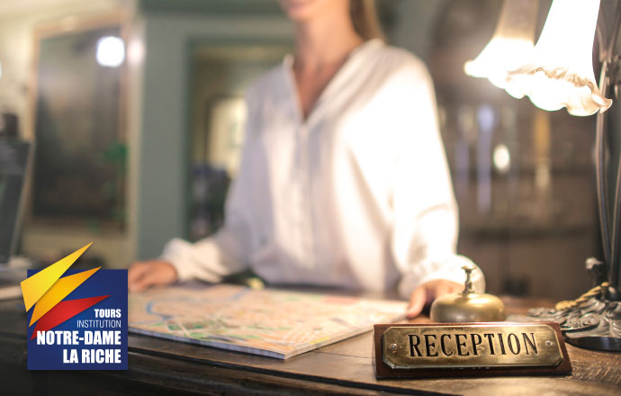
NOUVEAU ! Mention complémentaire de l'école hôtelière
09 décembre 2020Notre Dame La Riche propose aux jeunes ayant obtenu un baccalauréat, quelle que soit la filière (général, technologique ou professionnel), de se spécialiser dans le domaine de l'hôtellerie avec la mention complémentaire Accueil Réception " 🛎
Le titulaire de la mention assure la relation avec la clientèle, de la réservation au suivi du départ, afin de satisfaire au mieux les attentes du client.
Cette mention complémentaire se fait en 1 an, de septembre à juin, en alternance entre le centre de formation et l'entreprise.
Au programme :
🔹 travaux pratiques en accueil et en réception
🔹 communication orale et tourisme
🔹 digitalisation de l'activité hébergement
🔹 ressources humaines...
Vous êtes salarié sur un emploi lié à l'accueil, la réception ou la restauration et vous souhaitez renforcer vos compétences ? Nous proposons la mention complémentaire Accueil réception aux salariés sous forme de module. En plus, les modules sont éligibles au CPF 👍
Retrouvez toutes les informations sur cette mention complémentaire 👉 ICI
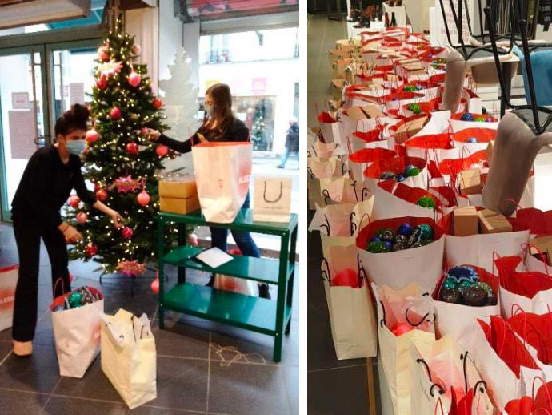
Pari réussi pour les élèves de Seconde CAP Employé Polyvalent !
3 décembre 2020Pour obtenir leur diplôme, les élèves doivent réaliser une action pédagogique en rapport avec le "chef d'œuvre" au Printemps de Tours.
Durant deux jours, accompagnés de leurs professeurs Madame BERTRAND et Monsieur FLORIMOND, ils ont réalisé toutes les décorations de Noël du magasin. Pas loin de 45 sapins et 4500 boules de Noël ont été installés et les rayons décorés.
Un beau travail d'équipe réalisé qui ne manquera pas de ravir petits et grands qui viendront faire leurs achats !
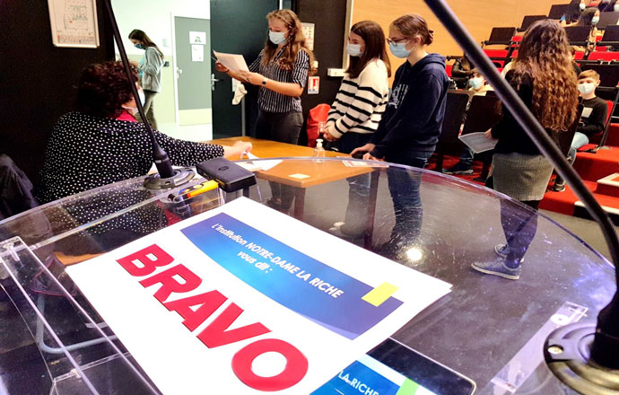
Remise des Diplômes National du Brevet
30 novembre 2020Malgré la crise sanitaire, Il n’était pas question que les collégiens de Notre-Dame La Riche qui ont passé le Diplôme National du Brevet en juin dernier soient privés du plaisir d’être félicités devant leurs camarades.
C’est la raison pour laquelle, dans le respect des gestes barrières, ce jeudi 12 novembre, ceux encore scolarisés à Notre-Dame La Riche ont été invités dans l’amphithéâtre Ariane afin d’y retirer leur diplôme.
Pour certains d’entre eux, à leur grande surprise, un diplôme du mérite ou un diplôme d’honneur, accompagné de la médaille de la Monnaie de Paris frappée à leur nom, leur a également été décerné.
Seul petit regret, compte tenu des conditions sanitaires, les parents n'ont pu être présents contrairement aux années précédentes.
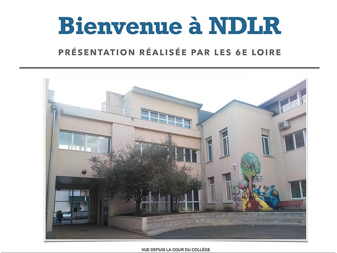
Découvrez le collège Notre-Dame La Riche vu par les élèves de 6e
25 novembre 2020Les élèves de 6e ont réalisé un reportage sur leur collège en version livre numérique. On peut y retrouver des photos, des textes explicatifs et des interviews d'élèves et de professeurs.
Un joli projet qui permet de se plonger dans la vie des collégiens de Notre-Dame La Riche. Félicitation aux élèves de 6e Loire et 6e Danube pour ces premiers livres numériques 👍
Livre numérique de la 6e Loire
Livre numérique de la 6e Danube
Pour les fêtes, offrez des chèques cadeaux ! 🎄
16 novembre 2020Faites plaisir à vos proches en leur offrant des chèques cadeaux leur permettant de participer à des cours d'œnologies ou des ateliers de dégustation à la Wine & Spirit School, l'école des vins et spiritueux de Notre-Dame la Riche.
Tous nos cours et ateliers sont donnés au restaurant de formation La Gabarre. Les vins sont issus de la cave du restaurant de formation et sont à 90 % des vins biologiques.
Profitez de nos offres alléchantes de fin d'année à partir de 45 € TTC seulement !
Une idée cadeau originale, qui ravira les amateurs de vins et spiritueux 👍
Retrouvez tous les chèques cadeaux et les dates des cours et ateliers sur www.wineandspiritschool.fr
Rendez-vous obligatoire pour notre soirée préinscription
03/11/2020Notre Dame La Riche vous accueille le vendredi 13 novembre prochain de 16h à 20h pour une soirée préinscription spéciales Ecole Maternelle & Elementaire, 6e et 2nde !
Une bonne occasion de venir découvrir nos établissements, rencontrer les dirigeants et les équipes pédagogiques et les méthodes mises en place pour favoriser l'épanouissement de tous.
❗️ Compte tenu de la situation sanitaire actuelle, pour assurer la sécurité de tous, la prise de rendez-vous à cette soirée est obligatoire. Merci de remplir notre formulaire pour être rappelé ou de nous contacter au 02 47 36 32 00 pour prendre rendez-vous ❗️
Vous ne pouvez pas être disponible à cette date ? Pour plus de renseignements ou préinscrire votre/vos enfants, rendez-vous sur notre formulaire de pré-inscription
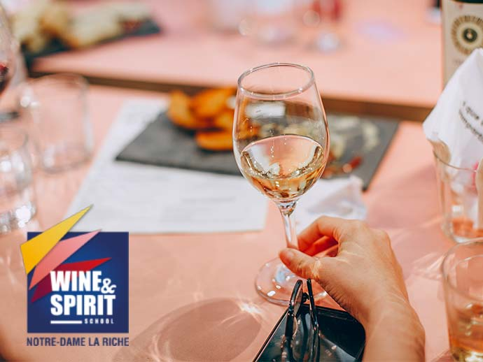
Ouverture de l'école des vins de Notre-Dame La Riche
21 octobre 2020Nous avons le plaisir de vous annoncer la naissance de l'école des vins de Notre-Dame La Riche : Wine & Spirit School 🍷
Cette nouvelle école a pour but de partager la culture des terroirs, des histoires et de transmettre les savoirs liés aux vins et spiritueux.
Au travers d'ateliers thématiques, de cours et de formations, venez découvrir des vins et eaux-de-vie découverts au travers de nos voyages gourmands dans différents vignobles de France et d'ailleurs.
Tous nos cours et ateliers sont donnés au restaurant de formation La Gabarre. Les vins sont issus de la cave du restaurant de formation et sont à 90 % des vins biologiques.
Que vous soyez amateurs, restaurateurs, jeunes en formations ou des entreprises, l'équipe de Wine & Spirit School sera heureuse de partager avec vous la richesse du vignoble Français.
Retrouvez toutes les dates et informations sur www.wineandspiritschool.fr
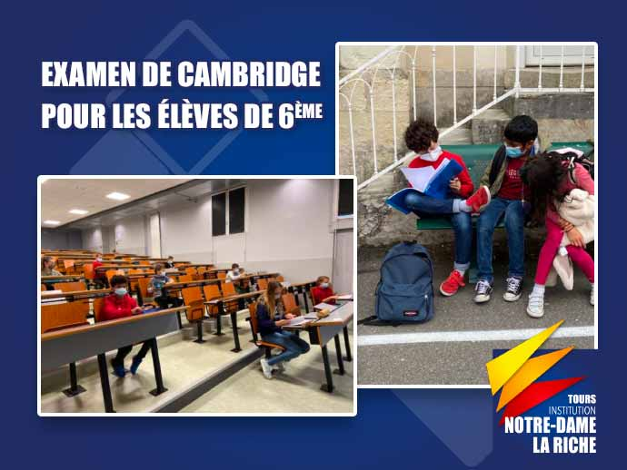
Examens de Cambridge 🇬🇧
12 octobre 2020Le 30 septembre 2020, 42 élèves de 6ème ont passé l'examen de Cambridge dans le collège de Notre-Dame La Riche.
Après un départ un peu stressant pour ces jeunes élèves, tout s'est bien passé grâce à la bienveillance des examinateurs durant les épreuves écrites et orales. 👏
L'examen Cambridge permet aux élèves d'évaluer leurs acquis sur 4 compétences : la compréhension, l'expression écrite, la compréhension orale et l'expression orale.
Tout au long de leur scolarité, ils pourront passer les certifications des niveaux supérieurs. Un diplôme Cambridge est un certificat qui se garde toute sa vie (contrairement aux autres diplômes qui doivent être renouvelés tous les 2/3 ans) et constitue un véritable atout une fois sur le marché du travail.
Nous sommes la seule école en Indre-et-Loire à proposer aux élèves de primaire, collège et lycée de préparer et passer cet examen.
Les résultats seront envoyés le 18 novembre prochain et une cérémonie de remise des diplômes aura lieu en janvier.
Pour découvrir les différentes classes de 6èmes
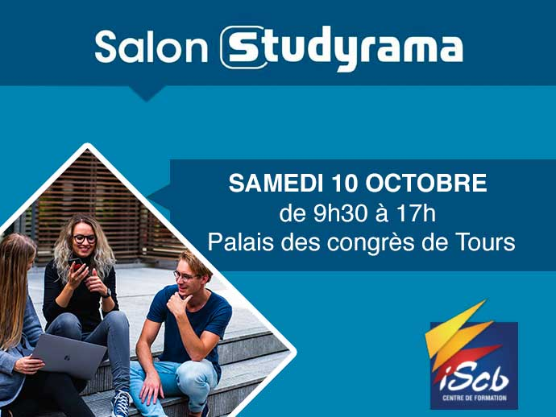
Salon Studyrama de Tours
07 octobre 2020Retrouvez-nous au salon Studyrama, samedi 10 octobre de 9h30 à 17h00 au Palais des Congrès de Tours.
Vous êtes lycéen, en classe préparatoire, étudiant ou titulaire d'un bac +1, +2 ou +3 ?
Vous cherchez une formation en alternance ? Venez nous rencontrer sur le salon.
Nous avons encore de la place dans certaines de nos formations pour cette année scolaire 2020/2021. Des entreprises sont prêtes à vous accueillir en alternance pour cette année scolaire en cours.
Venez nous rencontrer et échanger avec nous durant cette journée pour en savoir plus sur nos formations encore disponibles et les entreprises prêtes à vous accueillir. 👍
▶️ Pour découvrir les formations
▶️ Pour en savoir plus sur le salon
Nous vous attendons nombreux !
Retrouvez-nous au salon de l'Etudiant salle AL5
01 octobre 2020Samedi 3 octobre de 9h00 à 17h00, venez-nous rencontrer salle AL5 à l'espace Malraux de Joué-Lès-Tours.
Vous avez rendez-vous avec l'avenir !
Vous êtes lycéen, en classe préparatoire, étudiant ou titulaire d'un bac +1, +2 ou +3 ?
Vous ne savez pas quelle formation choisir ? Nous sommes là pour vous guider.
Venez nous rencontrer durant cette journée et nous répondrons à toutes vos questions.
En plus du centre de formation ISCB, l'enseignement supérieur Notre-Dame La Riche sera également présent sur le stand.
L'occasion de découvrir nos formations initiales, continues et en alternance.
▶️ Pour découvrir les formations
▶️ Pour en savoir plus sur le salon
Nous vous attendons nombreux !
⚠️ Inscription obligatoire et gratuite ⚠️
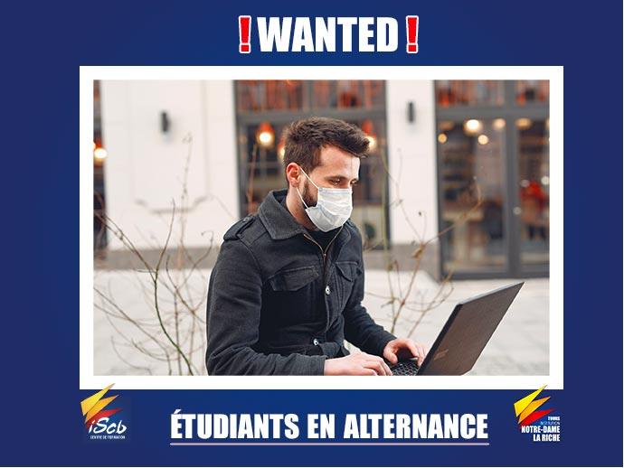
‼️ WANTED ETUDIANTS EN ALTERNANCE ‼️
29 septembre 2020 Vous cherchez un BTS en alternance et une entreprise pour cette année 2020 ?
Nous avons ce qu’il vous faut !
Nous vous fournissons une formation d'avenir et l'entreprise qui va avec.
Commencez tout de suite votre formation en alternance avec une entreprise qui est prête à vous accueillir dès maintenant.
Chaque semaine, des entreprises nous contactent pour être mises en relation avec des étudiants de l'ISCB - Notre Dame La Riche. Certaines d'entre elles sont encore à la recherche d'élèves en alternance !
Des places sont encore disponibles dans nos BTS en alternance :
• BTS Assurance
• BTS Gestion de la PME
• BTS Management Commercial Opérationnel (MCO)
• BTS Négociation et Digitalisation de la Relation Client (NDRC)
e vendredi 9 octobre de 17h à 19h Notre Dame La riche" class="w-100">
Soirée préinscription spéciale 6ème
28 septembre 2020Vendredi 9 octobre 2020 de 17h à 19h au collège Notre Dame La Riche, 42 rue Delpérier 37000 Tours, venez nous rencontrer lors de la soirée de préinscription spéciale 6e.
L’occasion de découvrir nos quatre sections : 6ème trilingue anglais, initiation à l’allemand et à l’espagnol | 6ème journalisme | 6ème division internationale | 6ème sections sportives.
Et aussi d’en connaître plus sur le projet Antarès et l’école numérique qui permettent aux jeunes élèves d’apprendre à l’aide de nouvelles méthodes innovantes grâce à une tablette numérique.
Nous vous attendons nombreux !
Découvrez également toutes les dates de nos prochaines portes ouvertes.
Vous ne pouvez pas être présent à ces dates ? Pour plus de renseignements ou préinscrire votre/vos enfants pour la rentrée 2021 rendez-vous sur notre page préinscription.
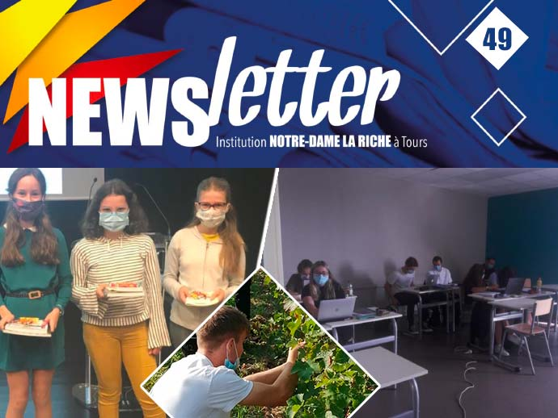
Notre deuxième Newsletter Notre Dame La Riche de cette année scolaire 2020-2021 est sortie !
24 septembre 2020Vous pouvez consulter notre deuxième newsletter ICI
Au sommaire :
👉 Journée de vendanges avec les élèves de Terminale Professionnelle CSR
👉 Le pôle enseignement supérieur a fait une rentrée réussie sous le soleil
👉 Le projet Antarès suit son cours
👉 Concours de Calligraphie
Retrouvez les newsletters précédentes
Retrouvez-nous sur le Salon de l'Etudiant
18 septembre 2020A l’Espace Malraux de Joué-les-Tours, venez rencontrer le samedi 3 octobre de 9h à 17h les enseignants et formateurs de l’ISCB, Centre de Formation et l’Enseignement Supérieur Notre-Dame La Riche.
L'occasion de découvrir nos formations de BTS en alternance ou en initiale : Audiovisuel | Assurance | Communication | Gestion-PME | MCO - Management Commercial Opérationnel | MHR - Management en Hôtellerie Restauration | NDRC - Négociation et Digitalisation de la Relation Client | Services Informatiques aux Organisations | Tourisme
Nous vous attendons nombreux !
Pour en savoir plus sur le Salon : rendez-vous sur www.letudiant.fr.
Pour découvrir le détail de nos formations, visitez la page BTS.
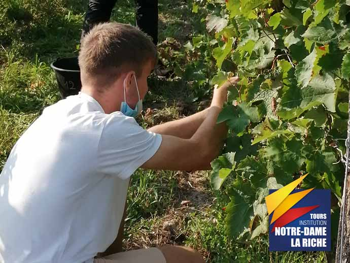
Journée de vendanges avec les élèves volontaires de terminale professionnelle CSR !
15 septembre 2020Samedi 12 septembre, nos étudiants en terminale professionnelle Commercialisation et Service en Restauration se sont rendus sur l’aire d’appellation « Bourgueil » et ont participé pendant une journée aux vendanges !
Au programme, vendanges manuelles, égrappage manuel et macération en fût en grains entiers !
Après une courte explication théorique, chacun s’est exercé aux vendanges, à sélectionner les grappes mûres et inversement à retirer les grains qui manquent de maturité. Les jeunes ont aussi largement pu goûter les grains sur pied et comparer les cépages (grolleau, cabernet franc, pinot d’Aunis).
Notre Dame La Riche, c'est aussi des cours pratiques en extérieur pour des projets concrets en lien avec la formation des étudiants !
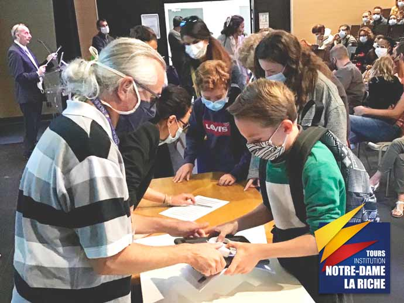
Ecole numérique : lancement du projet Antarès à Notre Dame La Riche !
10 septembre 2020La rentrée des 6e s'est déroulée sous le signe du numérique au Collège Notre Dame La Riche !
C’est parti pour le projet Antarès ! L’école numérique permet aux jeunes élèves d'apprendre à l'aide de nouvelles méthodes innovantes et de développer leur créativité !
Chaque collégien a pu recevoir une tablette dans le cadre de ce beau projet ! Un apprentissage dans l'ère du temps et un cartable allégé !
Tous masqués pour la rentrée !
7 septembre 2020La pré-rentrée des enseignants et du personnel de Notre Dame La Riche s'est bien déroulée dans le respect des règles sanitaires, l'ensemble des équipes pédagogiques ont pu préparer l'arrivée des élèves et étudiants de tous les établissements de la Micro-Crèche aux études supérieures !
La rentrée 2020 des différentes classes concernées pour ce début de mois s'est ainsi passée dans d'excellentes conditions 👍
Bonne rentrée à toutes et tous !
La rentrée scolaire aura bien lieu le 1er septembre
21 août 2020La rentrée scolaire aura bien lieu le mardi 1er septembre, a confirmé Jean-Michel BLANQUER, Ministre de l'Education Nationale, de la Jeunesse et des Sports, sur France 2.
Le port du masque sera obligatoire pour les adultes et les enfants à partir de 11 ans, même si la distance d'un mètre est possible. Il sera recommandé pour les adultes en maternelle.
Le protocole sanitaire reste inchangé et sera donc bien celui publié en juillet.
Pour retrouver l'heure et la date de rentrée de chaque établissement Notre Dame La Riche, consultez les documents de rentrée.
Pour télécharger le calendrier scolaire officiel du ministère de cette nouvelle année scolaire, suivez ce lien